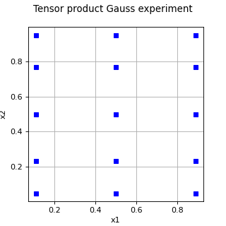

TensorProductExperiment¶
(Source code, png)

- class TensorProductExperiment(*args)¶
Tensor product experiment.
- Parameters:
- experimentslist of
WeightedExperiment List of
 marginal experiments of the tensor product experiment.
Each marginal experiment can have arbitrary dimension.
marginal experiments of the tensor product experiment.
Each marginal experiment can have arbitrary dimension.
- experimentslist of
See also
Notes
The tensor product design of experiments (DOE) is based on a collection of marginal multidimensional elementary designs of experiments. It is anisotropic in the sense that each marginal DOE does not necessarily have the same size. Using more points in one component may be useful if we want to get more accurate results in that particular direction.
Furthermore, each marginal DOE does not necessarily have a dimension equal to 1. In this sense, this is a generalization of a classical tensor product DOE.
Let
 be the integration domain
and let
be the integration domain
and let  be an integrable
function.
Let
be an integrable
function.
Let  be a probability density
function. The tensor product experiment produces an approximation of the
integral :
be a probability density
function. The tensor product experiment produces an approximation of the
integral :![\int_{\mathcal{X}} g(\boldsymbol{x}) f(\boldsymbol{x}) d\boldsymbol{x}
\approx \sum_{i = 1}^{s_t} w_i g\left(\boldsymbol{x}_i\right)]()
where
 is the size of the tensor product
design of experiments,
is the size of the tensor product
design of experiments,  are the
weights and
are the
weights and  are the nodes.
are the nodes.Let
 be the number of marginal DOEs.
For each marginal DOE index
be the number of marginal DOEs.
For each marginal DOE index  ,
let
,
let  be its size, representing the number of
nodes in the marginal DOE, and
let
be its size, representing the number of
nodes in the marginal DOE, and
let  be
the dimension of the
be
the dimension of the  -th marginal DOE.
Let
-th marginal DOE.
Let  be the
collection of marginal DOEs.
The dimension of the tensor product experiment is equal to the sum of the
dimensions of the marginal DOEs:
be the
collection of marginal DOEs.
The dimension of the tensor product experiment is equal to the sum of the
dimensions of the marginal DOEs:
The size of the tensor product experiment is equal to the product of the marginal DOE sizes:

Let
![\boldsymbol{k} = \left(k_1, ..., k_{n_e}\right) \in (\mathbb{N}^\star)^{n_e}]() be a multi-index where
be a multi-index where  is
the set of positive integers. For any marginal DOE ,
let
is
the set of positive integers. For any marginal DOE ,
let  be its
weights and let
be its
weights and let  be its nodes.
be its nodes.The tensor product quadrature is ([gerstner1998] page 214):
![Q^{(d_x)}_{s_t} = Q_{s_1}^{(d_1)} \otimes \cdots \otimes Q_{s_{n_e}}^{(d_{n_e})}]()
where:
![Q_{s_1}^{(d_1)} \otimes \cdots \otimes Q_{s_{n_e}}^{(d_{n_e})} (g)
= \sum_{k_1 = 1}^{s_1} \cdots \sum_{k_{n_e} = 1}^{s_{n_e}}
w_{s_1, k_1} \cdots w_{s_{n_e}, k_{n_e}}
g\left(\boldsymbol{x}_{s_1, k_1}, \ldots, \boldsymbol{x}_{s_{n_e}, k_{n_e}}\right).]()
For any multi-index
,
we write
if and only if
 for .
This means that each component of the multi-index is less than or equal to its
corresponding marginal size.
The set of multi-indices such that
for .
This means that each component of the multi-index is less than or equal to its
corresponding marginal size.
The set of multi-indices such that  is produced using all possible combinations of the indices with
the
is produced using all possible combinations of the indices with
the Tuplesclass.The tensor product experiment is:
![Q_{s_1}^{(d_1)} \otimes \cdots \otimes Q_{s_{n_e}}^{(d_{n_e})} (g)
= \sum_{\boldsymbol{k} \leq \left(s_1, ..., s_{n_e}\right)}
w_{\boldsymbol{k}} g\left(\boldsymbol{x}_{\boldsymbol{k}}\right),]()
where each weight is equal to the product of the marginal elementary weights:

and each node is equal to the agregation of the marginal elementary nodes:
![\boldsymbol{x}_{\boldsymbol{k}}
= \left(\boldsymbol{x}_{s_1, k_1}, \ldots, \boldsymbol{x}_{s_{n_e}, k_{n_e}}\right) \in \mathbb{R}^{d_x}.]()
Examples
In the following example, we tensorize two Gauss-Legendre quadratures, using 3 nodes in the first dimension and 5 nodes in the second.
>>> import openturns as ot >>> experiment1 = ot.GaussProductExperiment(ot.Uniform(0.0, 1.0), [3]) >>> experiment2 = ot.GaussProductExperiment(ot.Uniform(0.0, 1.0), [5]) >>> collection = [experiment1, experiment2] >>> multivariate_experiment = ot.TensorProductExperiment(collection) >>> nodes, weights = multivariate_experiment.generateWithWeights()
Marginal DOEs do not necessarily have dimension 1. In the following example, we tensorize two DOEs, where the first one has dimension 2, and the second one has dimension 3.
>>> # Experiment 1 : Uniform * 2 with 3 and 2 nodes. >>> marginal_sizes_1 = [3, 2] >>> dimension_1 = len(marginal_sizes_1) >>> distribution_1 = ot.ComposedDistribution([ot.Uniform()] * dimension_1) >>> experiment_1 = ot.GaussProductExperiment(distribution_1, marginal_sizes_1) >>> # Experiment 2 : Normal * 3 with 2, 2 and 1 nodes. >>> marginal_sizes_2 = [2, 2, 1] >>> dimension_2 = len(marginal_sizes_2) >>> distribution_2 = ot.ComposedDistribution([ot.Normal()] * dimension_2) >>> experiment_2 = ot.GaussProductExperiment(distribution_2, marginal_sizes_2) >>> # Tensor product >>> collection = [experiment_1, experiment_2] >>> multivariate_experiment = ot.TensorProductExperiment(collection) >>> nodes, weights = multivariate_experiment.generateWithWeights()
Methods
generate()Generate points according to the type of the experiment.
Generate points and their associated weight according to the type of the experiment.
Accessor to the object's name.
Accessor to the distribution.
getId()Accessor to the object's id.
getName()Accessor to the object's name.
Accessor to the object's shadowed id.
getSize()Accessor to the size of the generated sample.
Accessor to the object's visibility state.
Get the marginals of the experiment.
hasName()Test if the object is named.
Ask whether the experiment has uniform weights.
Test if the object has a distinguishable name.
isRandom()Accessor to the randomness of quadrature.
setDistribution(distribution)Accessor to the distribution.
setName(name)Accessor to the object's name.
setShadowedId(id)Accessor to the object's shadowed id.
setSize(size)Accessor to the size of the generated sample.
setVisibility(visible)Accessor to the object's visibility state.
Set the marginals of the experiment.
- __init__(*args)¶
- generate()¶
Generate points according to the type of the experiment.
- Returns:
- sample
Sample Points
 which constitute the design of experiments
with
which constitute the design of experiments
with  . The sampling method is defined by the nature of
the weighted experiment.
. The sampling method is defined by the nature of
the weighted experiment.
- sample
Examples
>>> import openturns as ot >>> ot.RandomGenerator.SetSeed(0) >>> myExperiment = ot.MonteCarloExperiment(ot.Normal(2), 5) >>> sample = myExperiment.generate() >>> print(sample) [ X0 X1 ] 0 : [ 0.608202 -1.26617 ] 1 : [ -0.438266 1.20548 ] 2 : [ -2.18139 0.350042 ] 3 : [ -0.355007 1.43725 ] 4 : [ 0.810668 0.793156 ]
- generateWithWeights()¶
Generate points and their associated weight according to the type of the experiment.
- Returns:
Examples
>>> import openturns as ot >>> ot.RandomGenerator.SetSeed(0) >>> myExperiment = ot.MonteCarloExperiment(ot.Normal(2), 5) >>> sample, weights = myExperiment.generateWithWeights() >>> print(sample) [ X0 X1 ] 0 : [ 0.608202 -1.26617 ] 1 : [ -0.438266 1.20548 ] 2 : [ -2.18139 0.350042 ] 3 : [ -0.355007 1.43725 ] 4 : [ 0.810668 0.793156 ] >>> print(weights) [0.2,0.2,0.2,0.2,0.2]
- getClassName()¶
Accessor to the object’s name.
- Returns:
- class_namestr
The object class name (object.__class__.__name__).
- getDistribution()¶
Accessor to the distribution.
- Returns:
- distribution
Distribution Distribution used to generate the set of input data.
- distribution
- getId()¶
Accessor to the object’s id.
- Returns:
- idint
Internal unique identifier.
- getName()¶
Accessor to the object’s name.
- Returns:
- namestr
The name of the object.
- getShadowedId()¶
Accessor to the object’s shadowed id.
- Returns:
- idint
Internal unique identifier.
- getSize()¶
Accessor to the size of the generated sample.
- Returns:
- sizepositive int
Number
 of points constituting the design of experiments.
of points constituting the design of experiments.
- getVisibility()¶
Accessor to the object’s visibility state.
- Returns:
- visiblebool
Visibility flag.
- getWeightedExperimentCollection()¶
Get the marginals of the experiment.
- Returns:
- colllist of
WeightedExperiment List of the marginals of the experiment.
- colllist of
- hasName()¶
Test if the object is named.
- Returns:
- hasNamebool
True if the name is not empty.
- hasUniformWeights()¶
Ask whether the experiment has uniform weights.
- Returns:
- hasUniformWeightsbool
Whether the experiment has uniform weights.
- hasVisibleName()¶
Test if the object has a distinguishable name.
- Returns:
- hasVisibleNamebool
True if the name is not empty and not the default one.
- isRandom()¶
Accessor to the randomness of quadrature.
- Parameters:
- isRandombool
Is true if the design of experiments is random. Otherwise, the design of experiment is assumed to be deterministic.
- setDistribution(distribution)¶
Accessor to the distribution.
- Parameters:
- distribution
Distribution Distribution used to generate the set of input data.
- distribution
- setName(name)¶
Accessor to the object’s name.
- Parameters:
- namestr
The name of the object.
- setShadowedId(id)¶
Accessor to the object’s shadowed id.
- Parameters:
- idint
Internal unique identifier.
- setSize(size)¶
Accessor to the size of the generated sample.
- Parameters:
- sizepositive int
Number
of points constituting the design of experiments.
- setVisibility(visible)¶
Accessor to the object’s visibility state.
- Parameters:
- visiblebool
Visibility flag.
- setWeightedExperimentCollection(coll)¶
Set the marginals of the experiment.
- Parameters:
- colllist of
WeightedExperiment List of the marginals of the experiment.
- colllist of
 associated with the points. By default,
all the weights are equal to
associated with the points. By default,
all the weights are equal to  .
.{kind=link}